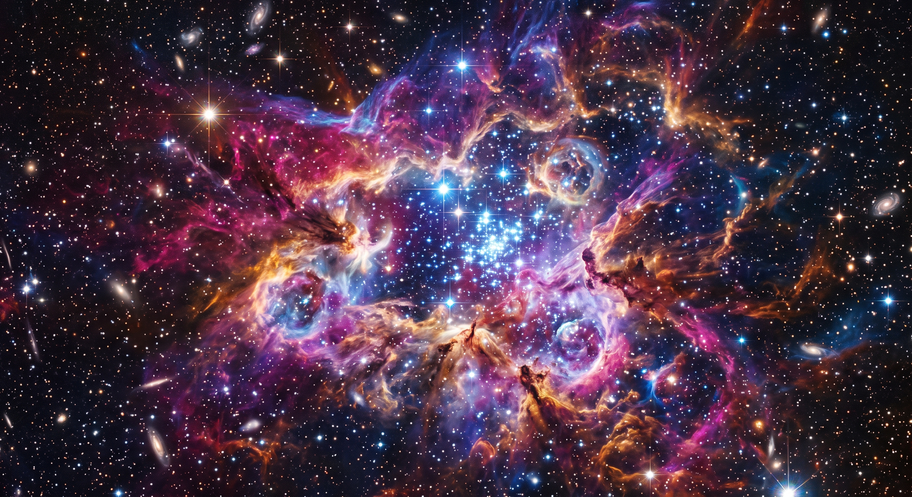

Una nebulosa es una inmensa y espectacular nube de gas y polvo cósmico flotando en el vacío del espacio. Estas maravillas visuales actúan como los grandes "viveros" del universo, ya que en su interior la gravedad condensa la materia para dar nacimiento a nuevas estrellas. Sin embargo, también pueden formarse a partir de los restos brillantes que deja una estrella al morir. Son, en esencia, las cunas y los cementerios de las estrellas.
Volver atrás